Common name in Tamil : Kandal
Common name in Telugu : Uppu ponna, kaaki ponna
Common name in Singhalese : Kadol
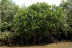
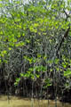
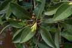
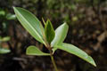
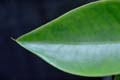
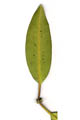
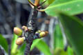
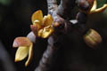
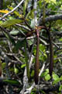
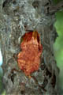
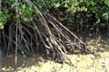
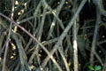
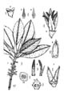
Diagnostic characters
Botany & morphology
Regeneration
Reproductive biology
Ecology
Distribution
Uses
Evergreen trees with sympodial branches supported by stilt and prop roots; bark brown. Leaves opposite, coriaceous. Flowers white or cream; hypocotyl long, cylindrical and clavate.
Leaves simple, opposite, short petiolate, elliptic - oblong, apex acute or apiculate, base cuneate, entire, 10 - 20 x 5 - 8 cm, coriaceous.
Inflorescence axillary, two flowered.
Flowers white or cream, small, bisexual, sessile, 10 – 12 mm across; calyx 4-lobed, concave, reflexed in fruit; corolla 4-lobed, fleshy, glabrous, caducous; stamens 12, 4 episepalous and paired, 4 epipetalous; ovary 2-celled, style glabrous, short.
Fruit brown, obpyriform; hypocotyl 30 cm long, smooth, cylindrical.
Stem base supported by numerous branched stilt roots in older trees.
Tree architecture and crown shape shows Attim’s model.
Germination by ‘Rhizophora-type’ (modified epigeal).
Pollination by wind and insects.
Conspicuous mangrove tree along tidal riverbanks and creeks and even in quiet seaward areas.
Tropical East Africa to N. Australia through South and South East Asia. In India, predominant in the Sunderbans, east and west coasts, and all islands of the South Andamans. In Sri Lanka, it occurs in the southwestern part.
Wood potential source of tannin and used as a substitute for petroleum coke for calcium carbide, besides being used as fuel-wood and in medicines; tannin from bark used as mosquito repellent. Leaves used as a fodder. The intricate stems with several stilt roots are effective as tide brakers and check land run off and form an ideal niche for several faunal species.
Top of the page